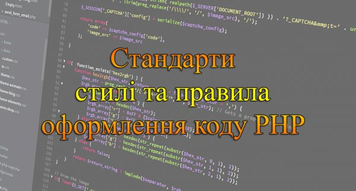

Стандарти, стилі та правила оформлення коду PHP
Більшість програмістів пишуть код як їм завгодно. Відступи роблять табуляціями, візуальний стиль як звикли. Якщо над проєктом працює виключно одна людина - це не створює проблем. А якщо надалі над написаним кодом будуть працювати інші програмісти? Буде дуже незвично і складно розібратися в чужому коді, тому рекомендується дотримуватися стандартів написання, описаних у цій статті.
Розберемо стандарти, стилі і правила оформлення коду PHP, які необхідні для забезпечення високого рівня технічної сумісності між загальним кодом PHP. Діючі стандарти PHP програмування: PSR-1 та PSR-12.
- До всіх імен змінних, класів, функцій та інших назв, створення яких лежить на плечах програміста, необхідно дотримуватися вимог зрозумілості та читабельності. Всі назви виключно англійською мовою ($validationData, $userName).
- Логічні блоки повинні бути відокремлені символом нового рядку.
- На кожному рівні необхідно робити відступи, в залежності від рівня. Для оформлення відступів повинні використовуватися чотири пробіли (але не знак табуляції).
- Необхідно максимально скорочувати вкладеність коду та дублювання.
- Потрібно зафіксовувати всю необхідну інформацію коментуванням та документуванням коду.
- Файли повинні використовувати тільки теги <?php та <?=.
<?php
echo "Hello, World!";
?>
<?= "Hello, World!" ?>- Недопустимо жорстко обмежувати довжину рядка. М’яке обмеження повинно складати 120 символів, але старайтеся, щоб рядки містили не більше 80 символів. Якщо рядок довший, рекомендується використовувати конкатенацію та перенесення рядка. У кінці непустих рядків не повинно бути пробілів. В одному рядку не повинно бути більш одного виразу.
- У кінці кожного файлу з PHP-кодом повинен бути один пустий рядок.
- У файлі, що містить лише PHP-код, закритий тег ?> повинен бути відсутнім.
- Ключові слова PHP повинні бути написані в нижньому регістрі.
- Для позначення типів даних необхідно використовувати коротку форма ключових слів типу, тобто bool замість boolean, int замість integer тощо.
- Після відкриваючих та перед закриваючими дужками не повинно бути пробілів.
- Константи PHP true, false і null повинні бути написані в нижньому регістрі.
$a = true;
$b = false;
$c = null;$x = 5;
$k = $x > 10 ? 2 : 4;
if ($k > 10)
echo '$k=' . $k;<?php
// побічний ефект: зміна налаштувань
ini_set('display_errors', '0');
// побічний ефект: підключення файлу
require_once ("file.php");
// побічний ефект: передача даних у вихідний потік
echo "Hello, World!";
// оголошення
function foo() {
// тіло функції
}- Між закриваючою круглою дужкою ")" і відкриваючою фігурною дужкою "{" повинен бути один пробіл.
- Імена класів повинні бути оголошені за допомогою так званого «СamelCase» (кожне слово починається з великої букви, між словами немає роздільників).
СамеlСаsе - стиль отримав назву від англ. Camel (верблюд), тобто прописні букви в названих
класах нагадують горби верблюда.
- Імена методів і функцій повинні бути опубліковані з використанням так званої «camelCase» (перше слово пише в нижньому регістрі, далі кожне слово починається з великої букви, а між словами немає роздільників).
- Константи (класів) повинні бути оголошені виключно у верхньому регістрі за допомогою символів підкреслення для розділення слів.
<?php
class Foo
{
const VERSION = '1.0';
const DATE_APPROVED = '2012-06-01';
}// Рядки з префіксом str
$strName, $strLastName
// Масиви з префіксом ar
$arResult, $arParams, $arUser
// Об’єкти з префіксом ob
$obElement, $obUser
// Об’єкти БД з префіксом db
$dbUser, $dbResult$x = 10;
$arResult = array();
$strSearch = '';
$bFoundName = false;- Відкриваюча фігурна дужка "{" у визначенні класу або методу повинна розташовуватися у новому рядку, а закриваюча "}" розташовуватися на наступному рядку після тіла класу або методу.
<?php
if ($expr1) {
// тіло if
} elseif ($expr2) {
// тіло elseif
} else {
// тіло else
}- Відкриваюча фігурна дужка "{" в керуючих конструкціях повинна розташовуватися в тому ж рядку, що і сама конструкція, а закриваюча "}" розташовуватися на наступному рядку після тіла конструкції.
- Після ключових слів в керуючих конструкціях (if, else, elseif, while, do-while, for, foreach, break, continue, switch, declare, return, require, include, require_once, include_once, goto) повинен розташовуватися один пробіл, а після викликів функцій і методів - не повинен.
if ($a === $b) {
$foo->bar($arg1);
bar();
}
foreach ($iterable as $key => $value) {
// тіло foreach
}
while ($expr) {
// тіло конструкції
}
do {
// тіло конструкції
} while ($expr);
for ($i = 0; $i < 10; $i++) {
// тіло for
}
function foo($arg1, &$arg2, $arg3 = [])
{
// тіло метода
}- Перед усіма двійковими арифметичними, порівняльними, присвоєними, побітовими, логічними, рядковими та типовими операторами повинен передувати і слідувати принаймні один пробіл.
- У списку аргументів після кожної коми повинен бути один пробіл.
- В конструкції Switch вираз Case має бути зміщений на один відступ від Switch, а ключове слово Break (або інше слово, що позначає вихід з конструкції) має розташовуватися на тому ж рівні відступів, що і тіло Case. У тому випадку, коли в непорожньому тілі Case навмисне не використовується Break, повинен бути коментар в стилі "// no break".
<?php
switch ($expr) {
case 0:
echo 'First case, with a break';
break;
case 1:
echo 'Second case, which falls through';
// no break
case 2:
case 3:
case 4:
echo 'Third case, return instead of break';
return;
default:
echo 'Default case';
break;
}array(
'ID' => GetMessage('ID'),
'LOGIN' => GetMessage('CRM_LOGIN'),
'PASSWORD' => GetMessage('CRM_PASSWORD'),
);